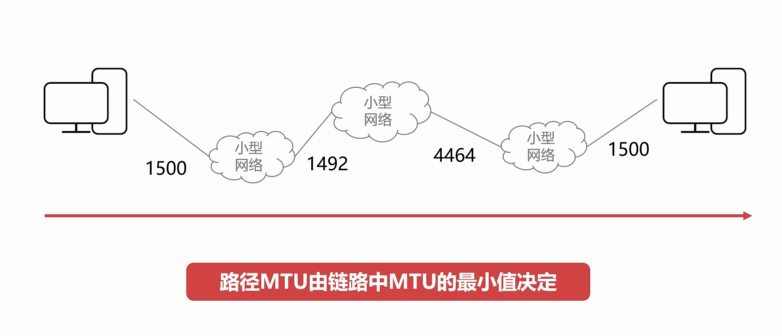

<h1 id="最大检测单元MTU"><a href="#最大检测单元MTU" class="headerlink" title="最大检测单元MTU"></a>最大检测单元MTU</h1><h1 id="MTU"><a href="#MTU" class="headerlink" title="MTU"></a>MTU</h1><ul>
<li>最大传输单元Maximum Transmission Unit</li>
<li>数据链路层的数据帧也不是越大越好</li>
<li>数据帧过大或者国小都会影响传输的效率</li>
</ul>
<p>以太网的MTU一般为1500字节</p>
<h1 id="路径MTU"><a href="#路径MTU" class="headerlink" title="路径MTU"></a>路径MTU</h1><h2 id="路径MTU就是链路中最小的MTU"><a href="#路径MTU就是链路中最小的MTU" class="headerlink" title="路径MTU就是链路中最小的MTU"></a>路径MTU就是链路中最小的MTU</h2><p></p>
